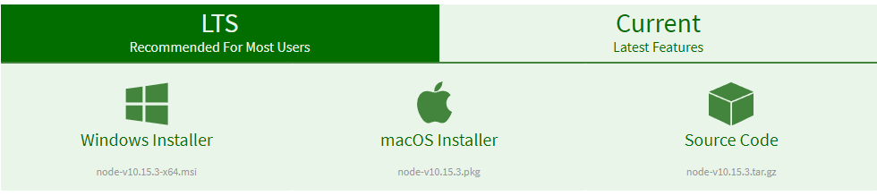
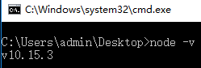
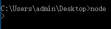
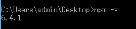
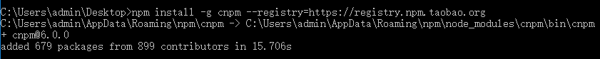
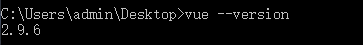
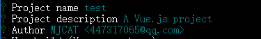
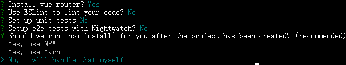
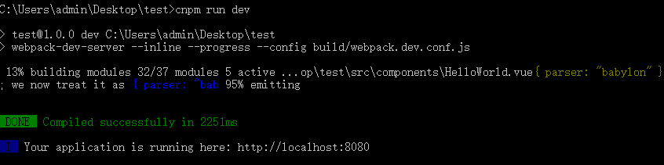
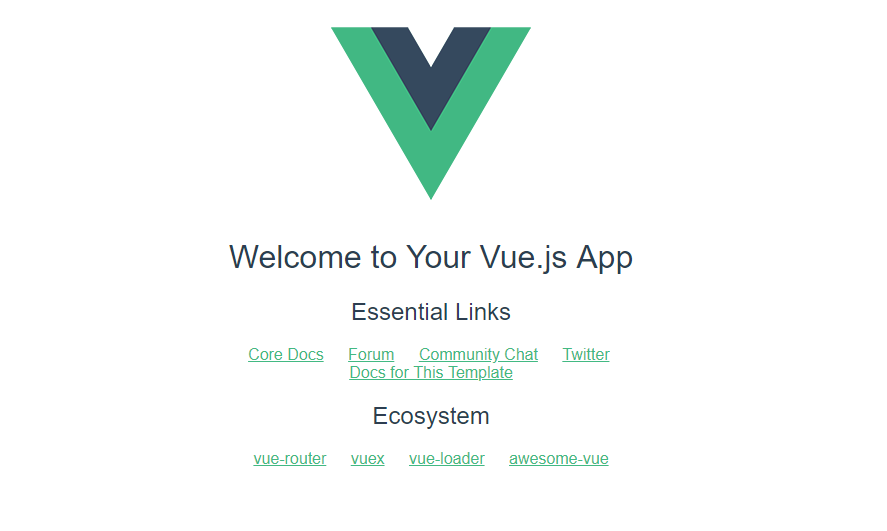

（以下安装环境均为win10）
下载链接：https://nodejs.org/en/download/

官网给出了两个版本，LTS和Curren。字面意思是推荐大多数用户使用LTS版本，而Current版本则是含有最新功能，百度了下LTS是长期维护版本，没有特殊要求这里就下载LTS版本了。
安装过程使用默认设置，一路下一步即可。
安装结束后打开控制台输入 node -v 查看版本号，若能正确执行则说明安装完成，并已加入环境变量

控制台输入node的话会进入node运行环境，输入,exit或者按两下ctrl+c退出

输入npm -v查看npm版本(这里和上面的v都是小写)，正确显示版本表示安装成功，加入环境变量成功

可以通过cdn引入，也可以通过安装vue-cli脚手架来使用vue
下面介绍安装vue-cli的方式
国外的网站总是太慢，这里采用国内淘宝镜像cnpm来代替npm包管理工具，可以加快包的安装速度
命令：
npm install -g cnpm --registry=https://registry.npm.taobao.org
输入命令：cnpm install --global vue-cli输入vue --version查看版本

vue init webpack test创建一个webpack模板的vue项目，test是项目名称。
然后会让输入项目名称，项目描述和作者。

安装过程中会提示你是否安装vue-route，这个要用到，输入yes或者回车，之后让安装的东西就都是用不到的了，可以输入no。最后一个让你选择是否立刻运行npm install, 这里不要直接确定，npm很慢，选最后一个，等会自己安装。安装过程中你的当前路径会出现你创建的这个项目文件夹。然后再进入项目使用刚刚安装的cnpm，运行cnpm install，安装所需依赖。

cd进入刚刚创建的项目文件夹，运行命令
cnpm run dev
这时候在浏览器中输入 localhost:8080即可访问我们的项目(有时候会自动跳转)

出现如图界面，即创建成功。